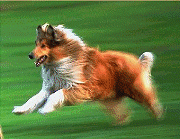
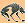

Ricardo's Page
My Dog

My dog Sasha is my best friend. She likes to choose
the soccer ball when I practice. It is so funny to
see her running down the field trying to catch the
ball with her mouth. It just won't fit!
Once Sasha saved my life. When I was only 4 years old. I started to go into
the street to get a ball that
had rolled across the street. Of course I did not think to look for cars!
Sasha got in front of me and
knocked me backwards onto the sidewalk. I was mad until I saw the car go by
where I would have been
Then I was so happy that Sasha was smarter than i was!/

Los Lobos
- my team
Back to
Hector's page
01/05/02